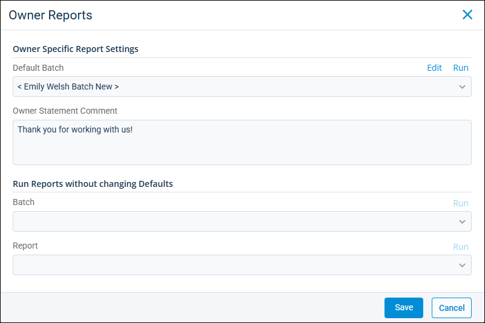
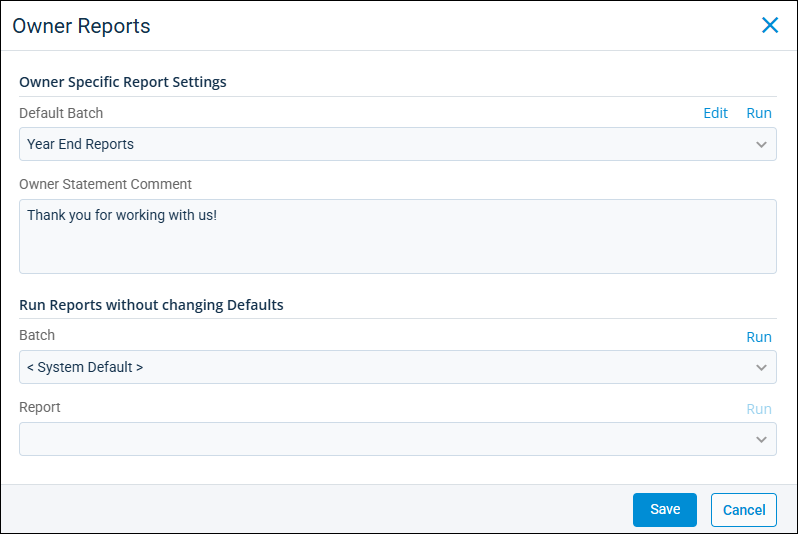

Source: https://rmxhelp.rentmanager.com/Topics/Express/KB/Report-Batch-Run-Owner.htm
Run an Owner Report Batch
Report batches are collections of reports that can be generated simultaneously to save time and increase efficiency. The Owner Reports pop-up allows you to set up and run key reports for your owners. You can run individual reports or set up report batches to generate a collection of reports quickly. Creating a report batch allows you to group and run reports together for individual owners. Once created, batches can be run manually as needed or scheduled to be automatically emailed to owners or other recipients.
Related Preferences
If most of your owners need the same set of financial reports, you can create a report batch and designate it as the Default owner report batch in system preferences. The benefits of doing this are you can view the reports before they are sent and the batches do not need to be updated when a new property is acquired. For more information, refer to Owner Report Settings (System Preferences).
Related Privileges
| Group | Privilege | Column |
|---|---|---|
| Owners | Owners | View |
| Letter/Email Templates/Reports/Packets | Run reports | Enabled |
Additionally, on the Reports tab, you must have access to the corresponding reports you wish to add to the batch.
For more information, refer to Control User Access.
Option 1: Run Reports with Owner-Specific Report Settings
To help you better accommodate the type of information owners may need access to, you can use the Owner Specific Report Settings section to customize a report batch for just that owner. The owner-specific report batch (which is named after the owner as <Owner Name Batch>) can be edited, saved, and run for the owner. Alternatively, you can edit and run a different report batch that you own.
To run an owner-specific report batch, do the following:
-
Go to
 arrow_forward Owners arrow_forward Owners and select an owner from the list.
arrow_forward Owners arrow_forward Owners and select an owner from the list.
The owner's details page displays. -
On the action bar to the right, click
 arrow_forward Owner Reports.
arrow_forward Owner Reports.
-
In the Default Batch field, select the report batch you want to run for the owner.
Only batches that you own or were shared with you display. -
To edit what reports are in included in the selected batch, click Edit.
More Information
If a batch was shared with you but is owned by another user, you can open the report batch to view the reports and report options, but you cannot make changes to the batch.
If you edit any batch other than the owner-specific batch (i.e., the batch named after the owner, such as <Emily Welsh Batch>), those changes are applied to the selected report batch for all owners.
-
In the Owner Statement Comment field, enter a message to display in the Comments section of the Owner Statement if it is included in the selected batch.
-
When you are satisfied with your selection, click Save.
Throughout Rent Manager when the option to run an owner batch is selected, this is the batch is generated for the owner. -
Click Run to generate the report batch.
Option 2: Run Reports without Changing Defaults
You can use this section to quickly run a report batch for the owner with its default settings. In this section, the report batch's settings and reports cannot be edited.
To run a default report batch for an owner, do the following:
-
Go to
arrow_forward Owners arrow_forward Owners and select an owner from the list.
The owner's details page displays. -
On the action bar to the right, click
arrow_forward Owner Reports.
-
In the Batch field, select the report batch you want to run for the owner.
Only batches that you own or were shared with you display. -
Click Run to generate the report batch.
More Information
If you only want to run a single report for the owner, select it from the Report field and click Run.